Object(ified) — Capstone Zine
What began as an allegorical essay about the objectification of the female form led to Object(ified) — a Risograph-printed zine produced as my MFA capstone at Pratt Institute. A visual essay that weaves together Western representations of the female form throughout history, and situates them within the digital landscape of today.

About
What began as an allegorical essay about the objectification of the female form led to Object(ified). This Riso zine consists of a visual essay that weaves together a narrative that juxtaposes and interlaces Western representations of the female form throughout history. By placing the female form within the context of technology today, the zine exposes the cycle of objectification — now within the framework of the digital landscape.
"Constraint is not the opposite of creativity. It is its condition."
Form
What is a zine? A zine is a small, self-published work of original or appropriated images. It is usually printed using a photocopier, so it can be inexpensively produced for mass circulation. Zines have served as a significant medium of communication for marginalized voices. By embracing the "DIY" philosophy of zine-making, it is possible to circumvent traditional publishing houses and graphic design conventions.
What is a Riso? The Riso machine is a cross between screenprinting and a photocopier. Unlike laser or inkjet printing, the riso uses vibrant inks that are semi-opaque and often come in metallic or fluorescent colors. It is also possible to print high-volumes in a short period of time — making Risograph printing more sustainable, accessible, and affordable than traditional publishing and printing.
Typography & Layout
The typography system is deliberately minimal — a single typeface family at three weights, used at extreme sizes to create contrast within the constraint. Large headlines printed in the first ink color, body copy in the second.
The layout grid uses a simple three-column structure that shifts between spreads — sometimes used strictly, sometimes broken deliberately. The tension between grid adherence and deviation mirrors the zine's content.
Process & Print Testing
Risograph printing requires extensive testing. Paper absorption, ink density, and registration all behave differently depending on stock weight and humidity. Multiple test runs were printed and evaluated before committing to the full edition.
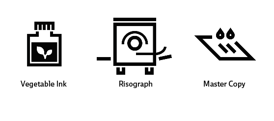
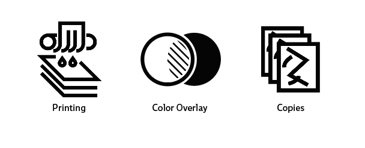
Production Details
The final edition was printed in a limited run and hand-assembled. Each copy was folded, collated, and saddle-stapled by hand — a production process that makes every copy slightly unique and gives the object a physical intimacy that offset printing can't replicate.
The Zine in Motion
A scan of all spreads assembled into a looping sequence — showing Object(ified) as a continuous reading experience from cover to cover.
All Spreads
All twelve spreads of Object(ified), printed in two-color Risograph.
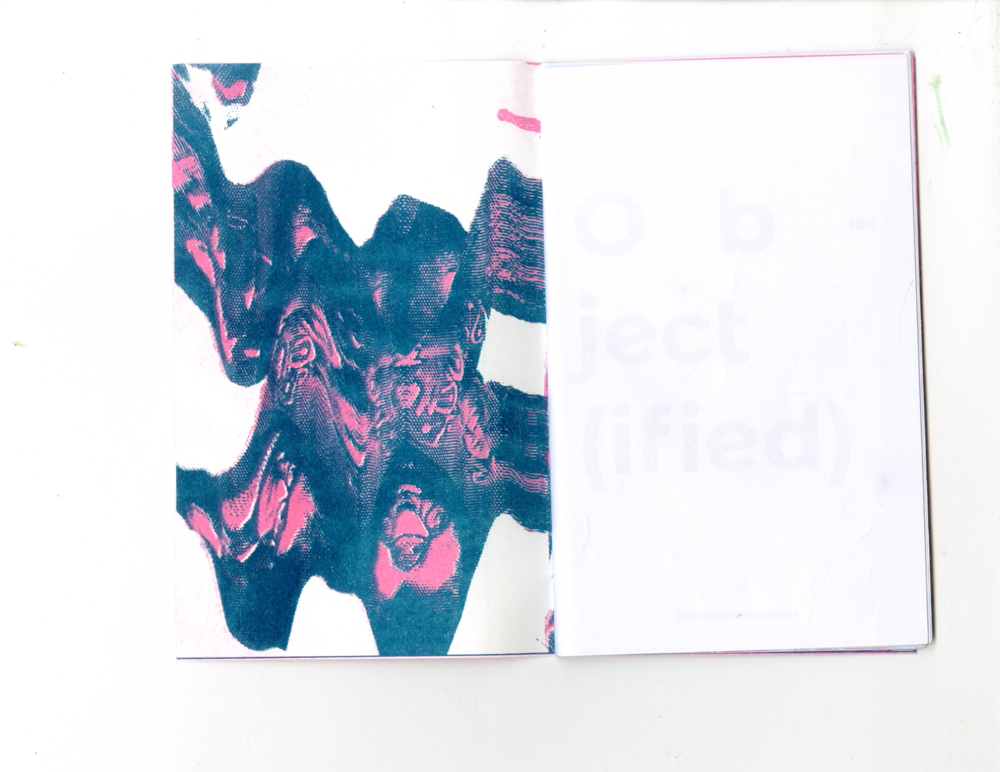
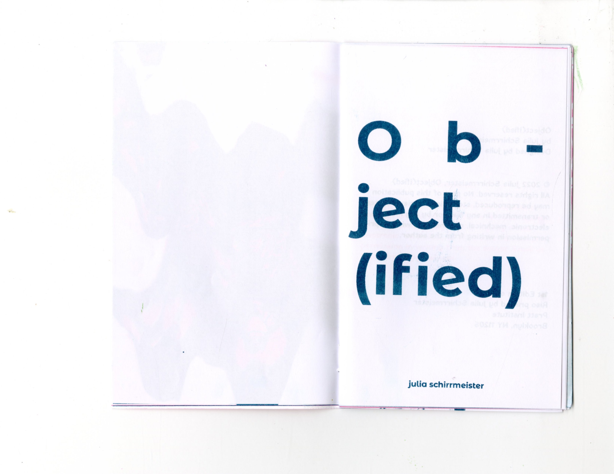
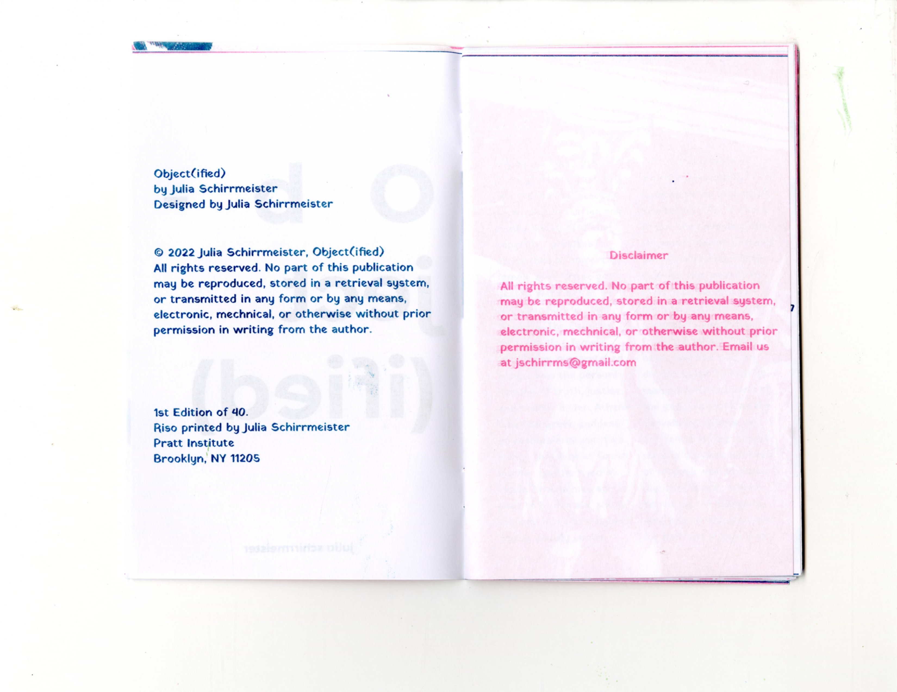
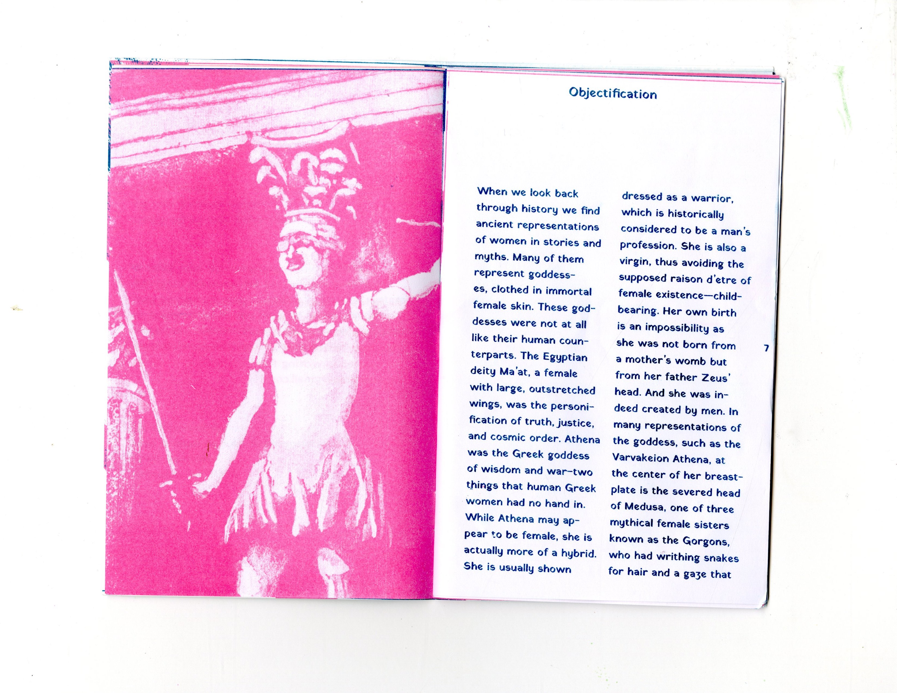
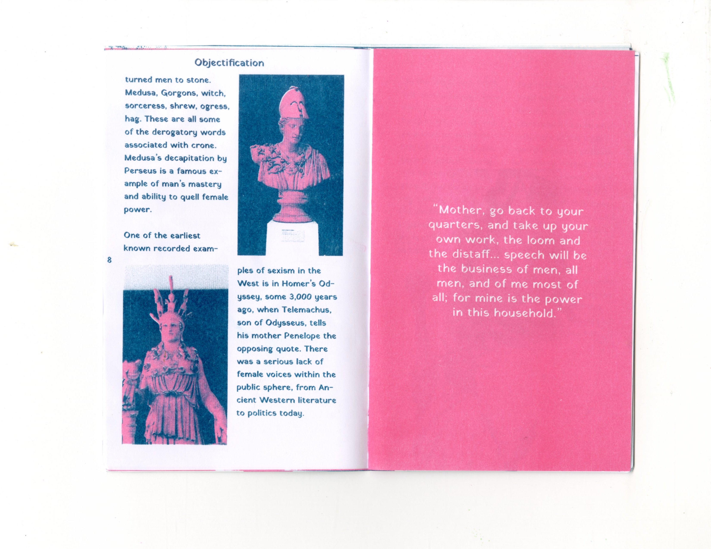
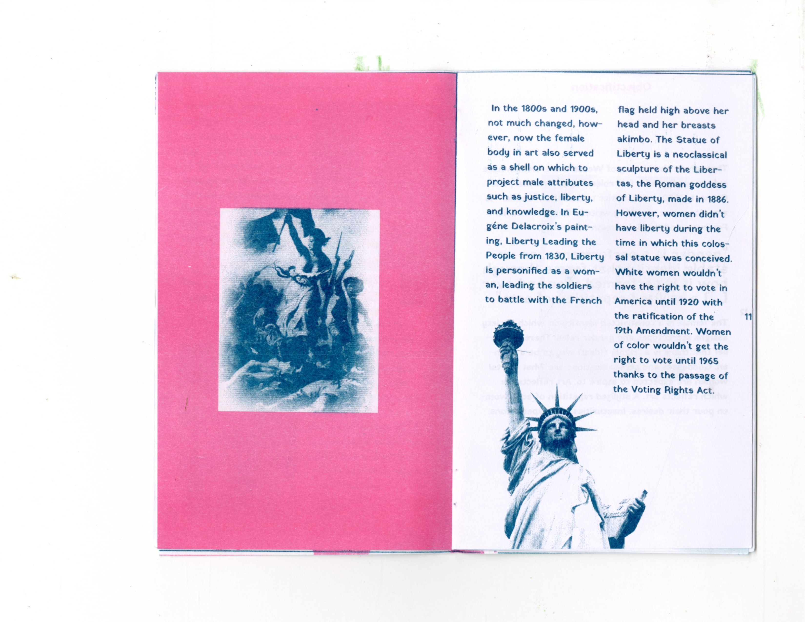
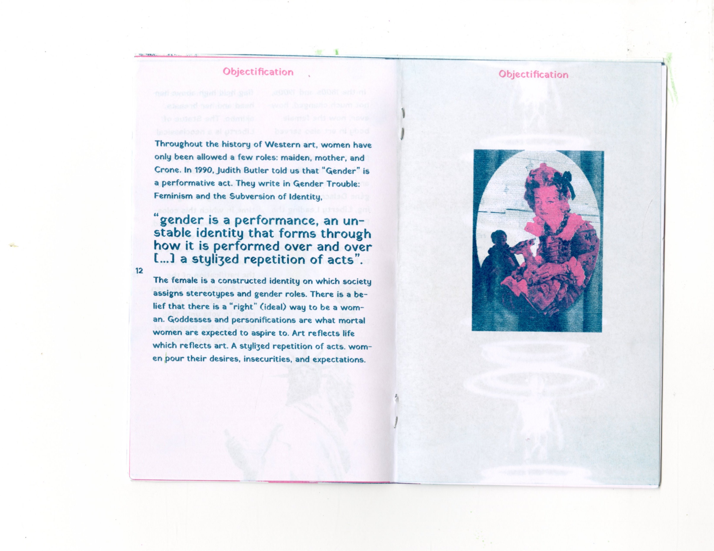
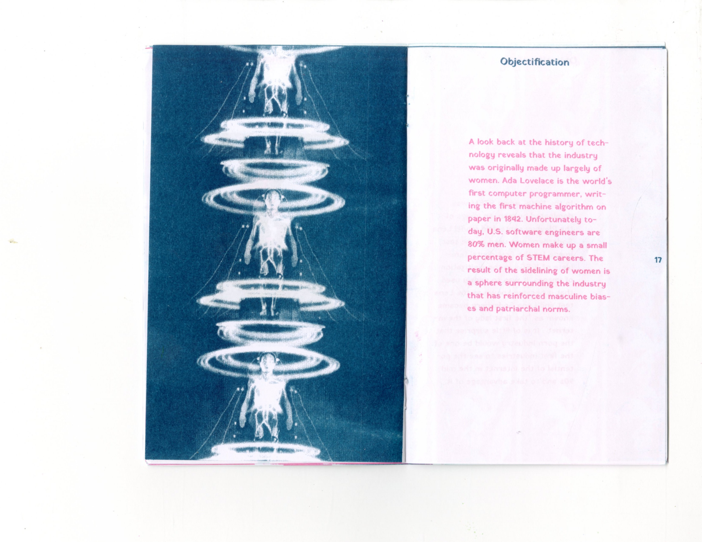
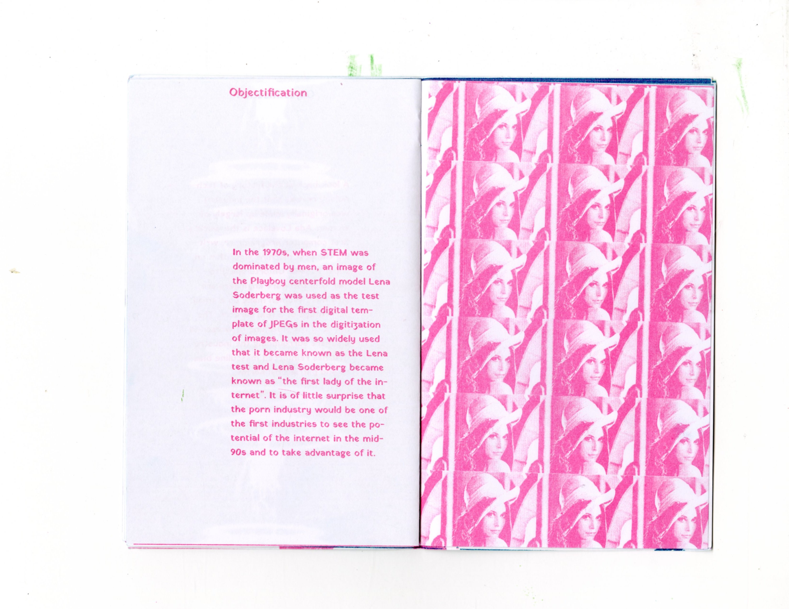
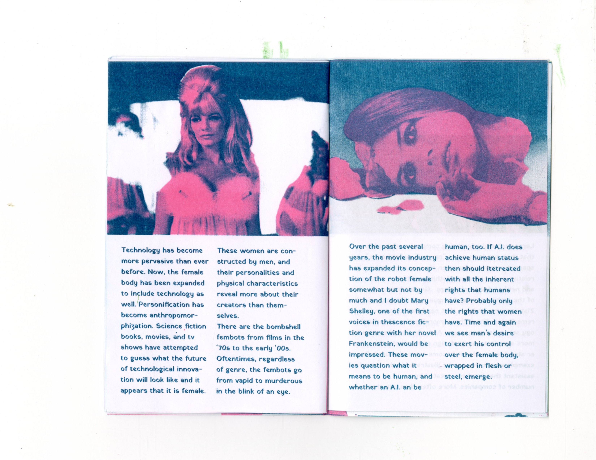
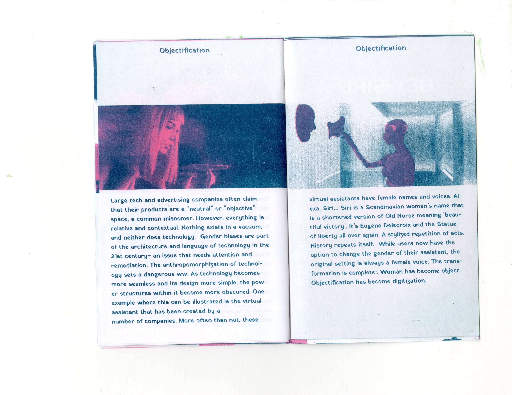
Final Outcome & Reflection
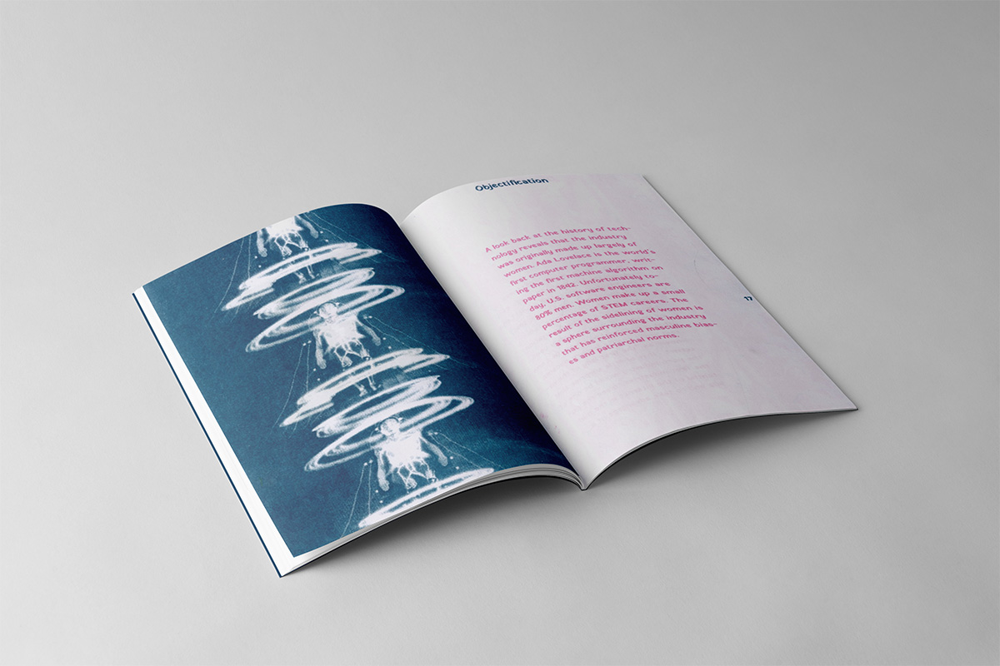
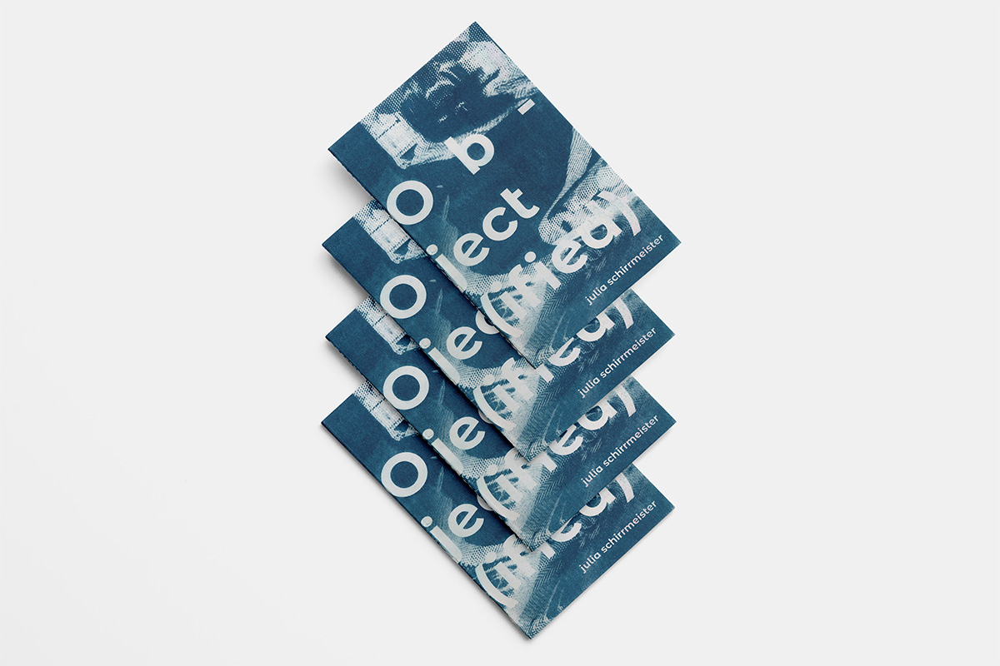
The capstone zine is the most physically satisfying thing I've made. Holding the finished object — knowing every choice was made with the Risograph's qualities in mind — felt like a conversation between designer and machine that resolved into something neither could have made alone.
What I learned: Working with process-specific constraints forces a clarity that open-ended projects rarely demand. When you cannot change the ink, you must become more inventive about everything else. Constraint taught me to design more deliberately.